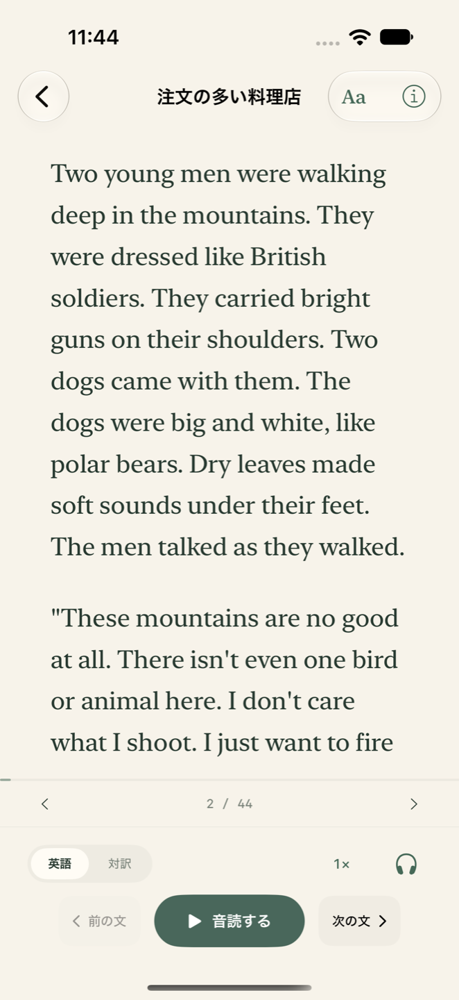

01
語り直した英語で、読む。
長い一文は短く分け、難しい表現は説明し直す。中学英語を目安に、物語を丸ごと読みやすくしています。
中学英語で、日本の名作を。
原作の長い一文は、いくつもの短い英文に。
難しい表現は、身近な言葉で説明し直す。
日本の名作を、中学英語を目安に語り直しました。
英語を学び直したい大人のための読書アプリ。
iPhone / iOS 17以降

CLASSIC STORIES, RETOLD IN SIMPLE ENGLISH
出来事をひとつずつ、短い文で。
言葉の難しさをほどいて、物語はそのままに。
原作の一文をそのまま英語に置き換えるのではなく、伝える内容を整理し、複数の短い英文で説明し直しています。難しい一語も、身近な言葉でわかる表現へ。場面・会話・結末まで残し、物語全体を読みやすい英語につくり直しました。
原作の、長い一文
二人の若い紳士が、すっかりイギリスの兵隊のかたちをして、ぴかぴかする鉄砲をかついで、白熊のような犬を二疋つれて、だいぶ山奥の、木の葉のかさかさしたとこを、こんなことを云いながら、あるいておりました。
宮沢賢治『注文の多い料理店』冒頭
青空文庫の原文を読む ↗
アプリでは、7つの短い英文に。
実際に収録している英文です。一文ずつ、場面を思い浮かべながら読めます。
A STORY, AT YOUR PACE
気になる一文を確かめながら、
英語で読む時間を少しずつ。
長い一文は短く分け、難しい表現は説明し直す。中学英語を目安に、物語を丸ごと読みやすくしています。
英文をタップすると、その文に対応する自然な日本語訳へ。青空文庫の原文も別に参照できます。
音読しながら、今の文を目で追って。速度も文字の大きさも、読みやすい設定に変えられます。
ONE SENTENCE AT A TIME
「この文、どういう意味だろう」。
日本語で確かめたら、また英語のつづきへ。
一文ずつの対訳が、読む時間を支えます。
この文章で、対訳を確認する感覚をお試しください。
日本語訳は英文に合わせて制作したもので、原文とは別に表示します。
注文の多い料理店 / THE RESTAURANT OF MANY ORDERS
Two young men were walking deep in the mountains.
二人の若い男が山奥を歩いていました。
この英文に対応する日本語訳NINE CLASSICS, COMPLETE STORIES
短い寓話から、先が気になるミステリーまで。
9作品すべてを、全文英訳で。
宮沢賢治
太宰治
江戸川乱歩
芥川龍之介
芥川龍之介
芥川龍之介
中島敦
新美南吉
芥川龍之介
中学英語は制作上の目安です。固有名詞や、物語を伝えるために必要な言葉も含まれます。
READ. LISTEN. RETURN.
Apple音声ですぐに音読。0.5〜2倍速で、今の自分に合う速さを選べます。再生中の文を追いながら、画面をロックして聴くこともできます。
任意で音声合成モデル「Supertonic 3」（約380MB）を取得すると、iPhone内で英文から高品質な音声を生成できます。取得後は通信せずに音読できます。本文・対訳はダウンロードなしでオフライン閲覧できます。
ログイン・広告・アプリ内課金なし
THE JOY OF UNDERSTANDING
自分にとって読みやすい文章を、内容を楽しみながら読みつづける。「多読」の考え方をヒントに、やさしい英語と一文の対訳を組み合わせました。理論と参考文献はアプリ内でも紹介しています。
学習方針と参考文献について読みたいから、読む。
わかるから、つづく。
そんな英語の時間を。
読み方や音読、データの保存について、サポートでご案内しています。